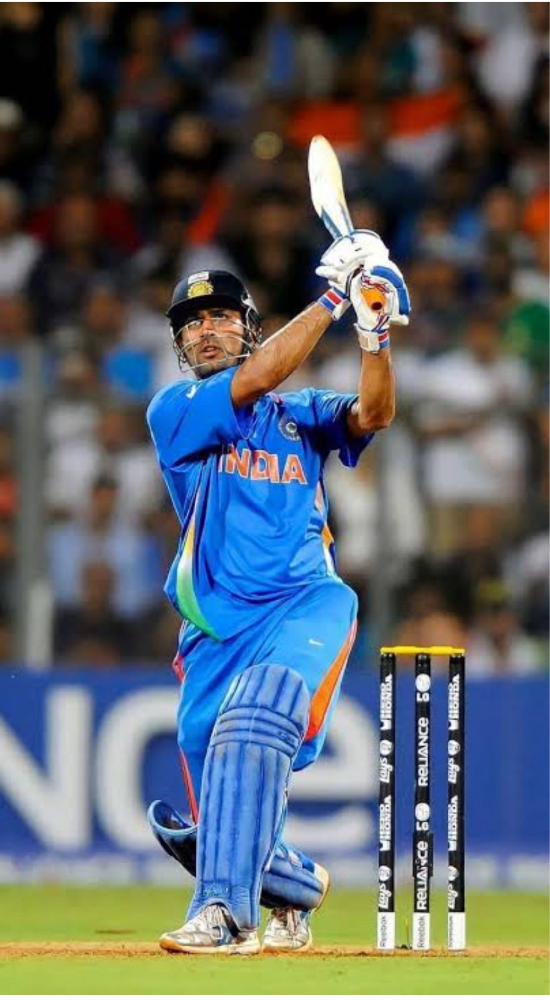

ధోనీ Vs రోహిత్.. గ్రేటెస్ట్ కెప్టెన్ ఎవరు? 🏏🔥 | MS Dhoni vs Rohit Sharma | Team India
ధోనీ Vs రోహిత్ శర్మ.. ఇద్దరిలో గ్రేటెస్ట్ కెప్టెన్ ఎవరు? 🏏🔥 టీమిండియాకు ఇద్దరూ అద్భుతమైన కెప్టెన్లు. ధోనీ కెప్టెన్సీలో భారత్ ఎన్నో చారిత్రాత్మక విజయాలు సాధించింది. రోహిత్ శర్మ కూడా తన కెప్టెన్సీలో టీమిండియాకు గొప్ప విజయాలు అందించాడు.

ధోనీ కెప్టెన్సీలో టీమిండియా ఎన్నో చారిత్రాత్మక విజయాలు సాధించింది. ముఖ్యంగా 2007లో జరిగిన T20 వరల్డ్ కప్లో యువ భారత జట్టుకు కెప్టెన్గా వ్యవహరించిన ధోనీ… ఎవరూ పెద్దగా అంచనా వేయని సమయంలో టీమిండియాను ఛాంపియన్గా నిలిపాడు. ఆ తర్వాత 2011లో వన్డే వరల్డ్ కప్. భారత అభిమానులు ఎప్పటికీ మర్చిపోలేని టోర్నమెంట్ అది. స్వదేశంలో జరిగిన ఆ వరల్డ్ కప్లో ధోనీ తన కెప్టెన్సీతో జట్టును విజయపథంలో నడిపించాడు.